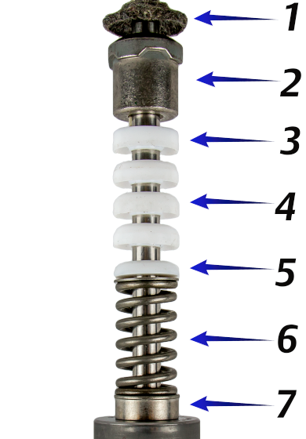
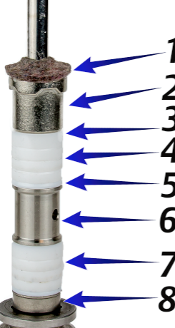

ch2 pass: PTFE packing photos; repurposed from old 71 PTFE Packing Sets  Spring-loadedone V-ring set, held by a spring  Jamtwo V-ring sets, lantern ring between Graphite jam packing looks the same, in black rings. 71